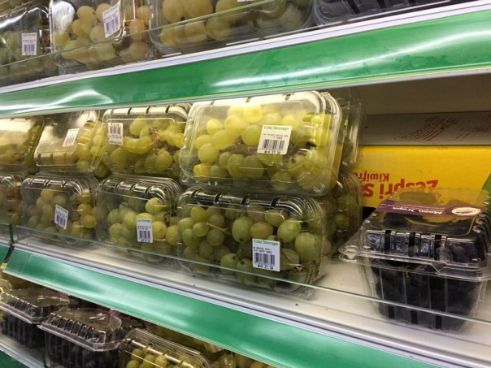

Jenis dan bentuk makanan
2021.03.24 20:50
Slideshare uses cookies to improve functionality and performance, and to provide you with relevant advertising. If you continue browsing the site, you agree to the use of cookies on this website. See our User Agreement and Privacy Policy .
Slideshare uses cookies to improve functionality and performance, and to provide you with relevant advertising. If you continue browsing the site, you agree to the use of cookies on this website. See our Privacy Policy and User Agreement for details.
SlideShare Explore Search You Upload Login Signup Home Explore Successfully reported this slideshow. We use your LinkedIn profile and activity data to personalize ads and to show you more relevant ads. You can change your ad preferences anytime. Jenis dan bentuk makanan Upcoming SlideShare Loading in … 5 × 1 1 of 15 Like this presentation? Why not share! Share Email JENIS DIET DAN HUBUNGANNYA DENGAN P... by pjj_kemenkes 36591 views Bentuk makanan by Nismaa Nismaa 5843 views Makanan untuk diet by cristriwibowo 40085 views Bentuk makanan by dinartanti 5723 views Dasar dietetik by sis mkes 10883 views Asistensi ddt reguler undana 2008 2009 by Charles Manubulu 3060 views Share SlideShare Facebook Twitter LinkedIn Embed Size (px) Start on Show related SlideShares at end WordPress Shortcode LinkJenis dan bentuk makanan
17,311 viewsShare Like Download ...
Cahya
FollowPublished on Jul 2, 2015
7 Comments 1 Like Statistics Notes Full Name Comment goes here. 12 hours ago Delete Reply Block Are you sure you want to Yes No Your message goes hereLogin to see the comments
qoriahaprilla 1 year ago No Downloads Views Total views 17,311 On SlideShare 0 From Embeds 0 Number of Embeds 4 Actions Shares 0 Downloads 74 Comments 7 Likes 1 No notes for slideJenis dan bentuk makanan
1. JENIS DAN BENTUK MAKANAN (STANDAR MAKANAN RUMAH SAKIT) 2. Jenis dan bentuk makanan yang ada di rumah sakit (standar makanan RS), meliputi : 1. Standar makanan umum rumah sakit 2. Standar makanan khusus (diet) 3. Diet pemeriksaan 3. 1. Standar makanan umum rumah sakit : a. Makanan biasa - Tidak memerlukan makanan khusus (diet khusus) - Susunan makanan mengacu pola menu seimbang dan Angka Kecukupan Gizi - Tujuannya adalah memberikan makanan sesuai kebutuhan gizi untuk mencegah dan mengurangi kerusakan jaringan tubuh - Energi, protein, lemak, karbohidrat, vitamin dan mineral diberikan sesuai kebutuhan 4. b. Makanan lunak - Tekstur mudah dikunyah, ditelan dan dicerna - Diberikan sesudah operasi tertentu, penyakit infeksi dengan kenaikan suhu yang tinggi, gangguan mengunyah dan menelan - Tujuannya memberikan makanan bentuk lunak yang mudah ditelan dan dicerna - Energi, protein, lemak, karbohidrat dan zat gizi lain diberikan cukup - Diberikan dalam bentuk cincang, mudah cerna, rendah serat, dan bumbu yang tidak merangsang - Bentuk perpindahan makanan saring ke makanan biasa 5. c. Makanan saring - Makanan semipadat , tekstur lebih halus daripada mkn lunak - Diberikan kepada pasien sesudah operasi tertentu, penyakit infeksi, gangguan mengunyah dan menelan. - Tujuannya sebagai proses adaptasi dari makanan bentuk semi padat ke bentuk makanan yang lebih padat - Diberikan jangka waktu yang singkat (1-3 hari), rendah serat, dan porsi kecil tapi sering - Perpindahan bentuk makanan cair kental ke makanan lunak 6. d. Makanan cair - Makanan yang mempunyai konsistensi cair hingga kental - Diberikan pasien pre/post operasi tertentu, gangguan mengunyah/menelan, suhu tinggi, setelah perdarahan saluran cerna - Makanan dapat diberikan secara oral 7. Makanan Cair ada dua jenis yaitu ; 1. Makanan cair jernih (cair I) Bentuk cairan jernih, mudah diserap, tidak merangsang, rendah sisa cth : teh/kaldu jernih/air kacang hijau/sirup 2. Makanan cair kental (cair II) Bentuk cair tidak tembus pandang/pekat, mudah cerna, mengandung protein & lemak cth : cair TETP/cair gurih/BS/BT 8. e. Makanan lewat pipa (personde) - Konsistensi cair tapi tidak tembus pandang - Diberikan pasien dengan mengunyah/menelan, kesadaran menurun, secara peroral atau personde (NGT) - Dua bentuk formula rumah sakit dan formula komersial - Perpindahan bentuk makanan cair jernih ke cair kental - Formula rumah sakit (sonde TETP/ sonde tim/ sonde DM) - Formula komersial/formula yang dibuat oleh pabrik (ensure, diabetasol,nutren dll ) 9. 2. Standar makanan khusus a. Diet Tinggi Energi Tinggi Protein (TETP) - Diet mengandung energi dan protein di atas kebutuhan normal - Tujuan memenuhi kebutuhan energi dan protein yg meningkat untuk mencegah/mengurangi kerusakan jaringan tubuh dan menambah BB /mencapai berat badan normal - Energi dan protein diberikan tinggi, Lemak dan karbohidrat diberikan cukup - Diberikan pasien pre dan post operasi, KEP, pasien luka bakar, hipertiroid, hamil dan post partum - Macam diet TETP ; TETP I dan TETP II (Energi 2000 kkal, Protein 2-2,5 gr/kg BB) 10. b. Diet Rendah Garam - Tujuan menghilangkan mengurangi retensi garam atau air dalam tubuh - Energi, protein, lemak, karbohidrat, vitamin dan mineral (kecuali Natrium) cukup - Jumlah natrium berat tidaknya retensi airgaramHipertensi - Macam diet Rendah Garam ; Rendah Garam I (200-400 mg Na) Rendah Garam II (600-800 mg Na) Rendah Garam III (1000-1200 mg Na) (1 gr garam dapur ~ 400 mg Na) 11. c. Diet Diabetes Mellitus (DM) - Tujuan membantu pasien DM memperbaiki pola makan dan olah raga mengontrol kadar gula darah (kontrol metabolik) - Komposisi energi, protein, lemak dan karbohidrat kebutuhan dan adatidaknya komplikasi, Vitamin dan mineral cukup - Pedoman 3 J Jadual, Jumlah dan Jenis - Macam diet DM ; B, B1, KV, G, B2, B3, Be, DM gestasional(kehamilan) 12. 3. Diet Pemeriksaan a. Diet Benzidine - Tujuan mengetahui adatidaknya perdarahan saluran cerna bagian atas - Diberikan 2-3 hari sebelum pemeriksaan, bentuk mkn saring mkn lunakmkn biasa - Bahan makanan yang tidak boleh diberikan ; yang dapat bereaksi dgn larutan benzidine (mengandung hemoglobin dan klorofil) 13. b. Diet Bubur Kecap pemeriksaan IVP (Intravenous Pielografi) - Tujuanuntuk pemeriksaan kelainan pada ginjal - Diberikan 1-2 hari sblm pemeriksaan dalam bentuk cair atau lunak 14. c. Diet Bowl (Rendah Sisa) - untuk pemeriksaan kolonoskopi - Tujuan untuk memberikan makanan secukupnya yang meninggalkan sedikit sisa atau rendah sisa dalam usus - Diberikan 2-3 hari sblm pemeriksaan - Diberikan bentuk lunak dan rendah sisa agar kolon bersih saat pemeriksaan - Disarankan banyak minum (dilakukan urus-urus) untuk melancarkan BAB Recommended Explore professional development books with Scribd Scribd - Free 30 day trial JENIS DIET DAN HUBUNGANNYA DENGAN PENYAKIT pjj_kemenkes Bentuk makanan Nismaa Nismaa Makanan untuk diet cristriwibowo Bentuk makanan dinartanti Dasar dietetik sis mkes Asistensi ddt reguler undana 2008 2009 Charles Manubulu Pemberian nutrisi secara oral (devi oktavia.u keperawatan a) Okta-Shi Sama 3 modul gizi kb 1 3 Uwes Chaeruman Materi v pembuatan formula pada gizi buruk Joni Iswanto Peran Ahli Gizi dalam Pengembangan Formula Makanan Yohanes Kristianto English Español Português Français Deutsch About Dev & API Blog Terms Privacy Copyright Support×
Share Clipboard
× Facebook Twitter LinkedIn LinkPublic clipboards featuring this slide
× No public clipboards found for this slideSelect another clipboard
×Looks like you’ve clipped this slide to already.
Create a clipboardYou just clipped your first slide!
Clipping is a handy way to collect important slides you want to go back to later. Now customize the name of a clipboard to store your clips.